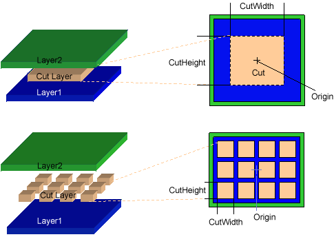
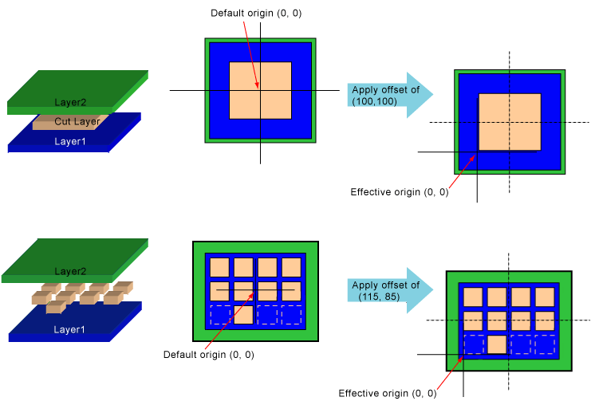
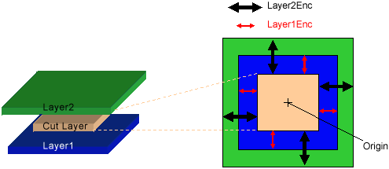
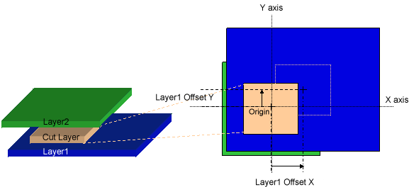
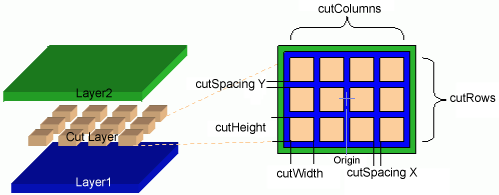
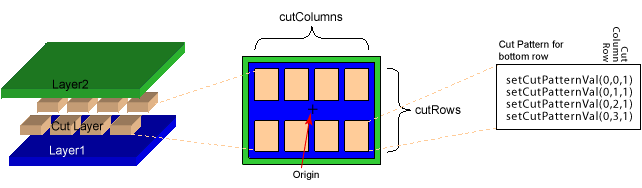
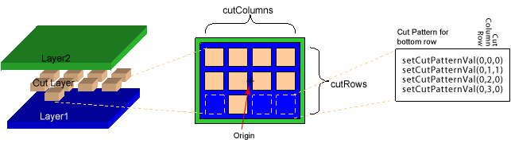
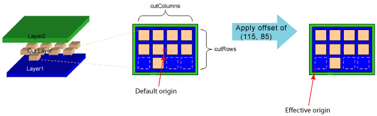

|
 |
 |
||||||
|
|
|
||||||
In OpenAccess, a standard via (oaStdVia) is one that can be constructed using a fixed set of predefined via parameters. This document describes the parameters for oaStdVias.
Note: For multiple cut vias, OpenAccess snaps the shapes in the cut layer to the manufacturing grid. The value for the manufacturing grid is obtained from the oaPhysicalLayer for the cut layer if specified. Otherwise, the default manufacturing grid from the oaTech database is used.
For a side-by-side visual comparison of the standard via parameters, click here.
The cut width, height, and layer via parameters determine the size of each cut rectangle and the layer number for this cut. By default, the origin (the 0,0 point of the coordinates) is at the center of the cut rectangle. For vias with multiple cut rectangles, the default origin is in the center of the cut array. See Origin Offset to move this default.
Use the corresponding get functions to return this information from the database.

The origin of a via is the (0,0) point in the coordinates for the shapes in the via. The setOriginOffset function specifies an offset value for the origin. The effect of specifying a value for the origin offset can be viewed in two different but equivalent ways:
Subtracting an origin offset of (-100, -100) from the default (0, 0) point of the origin gives you an effective origin of (100, 100), which moves the origin up and to the right relative to the shapes in the via. Subtracting an origin offset of (100, 100) gives you an effective origin of (-100, -100), which moves the origin down and to the left relative to the shapes in the via.
When a via instance is created by an oaVia, the oaVia specifies the coordinates for positioning the via within the block. The origin of the via is placed exactly at the via coordinates.
Use the getOriginOffset function to return the origin offset value.
The origin is placed at the center (0,0) location of the cut layer. The same is true for cuts with multiple rows or columns.
The following examples show offsets that might be used for technologies whose via cut shapes are defined with a lower-left origin rather than a center origin. The first example uses an offset of (100, 100), and the second example uses (115, 85). These offsets move every shape up and to the right.

Standard vias are connections between two adjacent signal layers on the chip that are being connected. The cut layer is where the chip processing cuts away the oxide between the two adjacent signal layers to provide the connection between them. The layer enclosure via parameters specify the width and height for the rectangles on the conducting layers that lie above and beneath the cut.
For example, a Layer1 enclosure value of (10, 10) adds a spacing of 10 units around each side of the cut on Layer1. If the cut width and height are (1000, 2000), then the total size of Layer1 is (1020, 2020).
Use the corresponding get functions to return this information from the database.
Note: The layer number for the signal layers is not a via parameter. The layer number value is specified when the oaStdVia is created.
This example shows the origin at the default location with a (0,0) offset. If using an origin offset, that offset is added to every part of the via, and the relative locations are unchanged. For vias that require Layer1 or Layer2 rectangles that are not centered at the cut center, use the Layer1 and Layer2 Offset parameters.

Some technologies add implant shapes to vias between the Metal1 and Diffusion layers. The implant enclosure via parameters specify the minimum width and height for the implant that surrounds the layer.
If there are no layer offsets, the implant enclosures are centered on the cut relative to the layer enclosure. When layer offset is applied, it affects both the layer enclosure and the implant enclosure. (The layer rectangles and the implant rectangles always have a common center.)
For example, an implant1 enclosure value of (10, 10) adds a spacing of 10 units around each side of Layer1. If the Layer1 width and height are (1000, 2000), then the total size of the implant1 shape is (1020, 2020).
Use the corresponding get functions to return this information from the database.
Note: The layer number for the implant layers is not a via parameter. The layer number, and whether the layers exist at all, are specified in the oaStdViaDef.
The following figure shows two examples: One with the default offset (0,0) and one with a specified offset.

For vias that require Layer1 or Layer2 rectangles that are not centered at the cut center, use the Layer1 and Layer2 Offset parameters.
In cases where Layer1 and Layer2 are not aligned on the center of the cut, the layer offset via parameters specify the amount of offset between the center of the layer and the center of the cut. The offset is added to the coordinates of the corresponding rectangle, so a positive offset moves the rectangle up and to the right.
Use the corresponding get functions to return this information from the database.

When large via cuts need to be implemented as a series of small rectangles, the spacing, columns, and rows via parameters determine the number of cut rectangles and the dimensions of the entire cut grid.
For vias with multiple cut rectangles, the default origin is in the center of the cut array. See Origin Offset to move this default.
Use the corresponding get functions to return this information from the database.
The number of columns and spacing also determine the total width of the cut, using the formula:
(cutWidth x numOfCols) + (cutSpacing x (numCols - 1))
For example, using the following sample values:
The total width is:
(1000 x 4) + (100 x 3) = 4300
Row and spacing values apply when determining the total height of the cut:
(cutWidth x numOfRows) + (cutSpacing x (numRows - 1))
For example:
The total height is:
(1000 x 3) + (100 x 2) = 3200

When large via cuts need to be implemented as a series of small rectangles, a custom cut pattern can be established to specify which of the rectangles in the cut grid should be instantiated. To establish this pattern the caller must have first set the size of the cut array with setCutColumns and setCutRows. Then individual cut rectangles may be made present or not with setCutPatternVal. An argument of 0 means that the corresponding rectangle is not used. An argument of 1 means that it is present. Row 0 column 0 of the cut grid is at the lower left corner.
Use the getCutPatternVal function to return the cut pattern information.
The first example shows a symmetrical two row, four column cut pattern. The via origin is centered at 0,0 and no cuts are "zeroed out," or removed from the symmetrical pattern.
The setCutPatternVal definitions are defined as (row, column, cut). The row and column values always start at zero. Cut is a boolean value. The setCutPatternVal values for the bottom row of the first sample cut pattern are shown below. Note that the default value of the cut pattern is 1, so setCutPatternVal need only be called for cut rectangles to be removed.

The next example shows a three row, four column cut pattern. The via origin is centered at 0,0. In this case, some of the cuts are removed from the pattern. The setCutPatternVal values for the bottom row of this second sample cut pattern are shown below.

The third example shows the same cut pattern, but with an origin offset applied. For example, an offset of (115, 85) moves every shape up and to the right. The origin offset is applied to the entire via shape, so the offset is not affected whether a cut is applied or is removed.

Return to Programmers Guide topics

Copyright © 2001-2010 Cadence Design Systems, Inc.
All rights reserved.